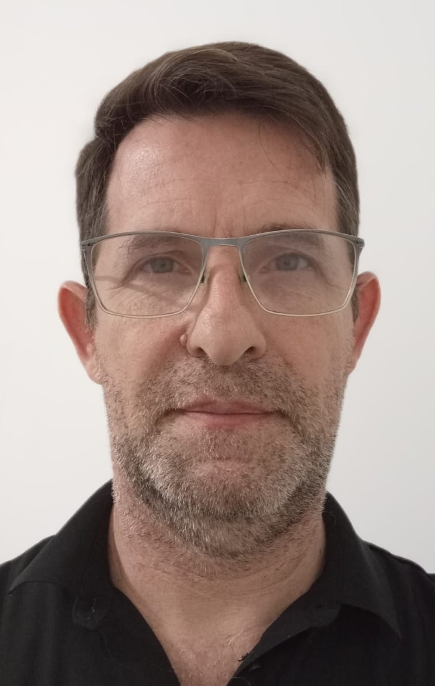
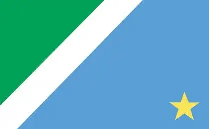

Luis F. Goellner
Sobre Mim

Meu nome é Felipe. Nasci em Campo Grande no Mato Grosso do Sul. Atualmente sou servidor público. Amo a Deus e a minha família, gosto muito de viajar para conhecer novos lugares e fazer amizades. Aprender cada vez mais me deixa animado.
Campo Grande, Mato Grosso do Sul

Mato Grosso do Sul é um estado localizado na região Centro-Oeste do Brasil. O estado possui belas paisagens naturais e é conhecido por lugares como o Pantanal e Bonito.